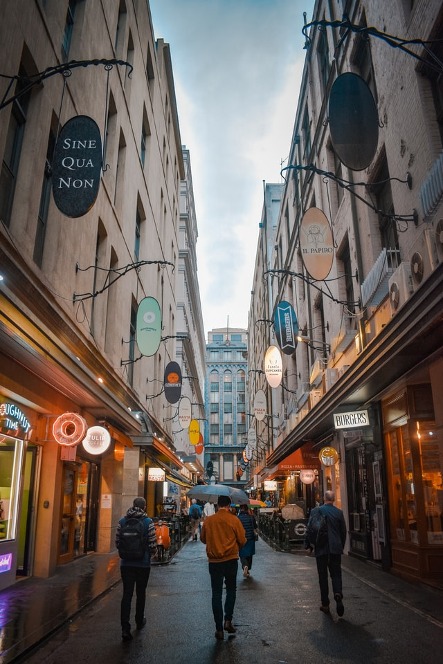

A study on the
Urban Metropolitan
Area of
Melbourne

John Batman's Treaty with a group of Wurundjeri Elders
History
Even before we begin
The City of Melbourne is located on the traditional land of the Kulin Nation and we acknowledge our respects to the elders. This special place is now known by its name of 'Melbourne'. The main reason for the settlement is the Yarra River. Melbourne was founded on the Yarra River in 1835 after an abortive bid in 1803 to establish a settlement inside the Port Phillip Bay heads near Sorrento. John Batman had set aside part of the land he had acquired from the Aboriginals for a township. Bourke visited the town in March 1837, and though Bourke was not impressed by the way Batman had 'bought' the land from the indigenous people, agreed the site near the Yarra River was the best place for a settlement.
1850 Gold Rush
A party formed by Mr. Louis John Michel, Mr. William Haberlin, James Furnival,
James Melville, James Headon, and B. Groenig, discovered the existence of gold
in the quartz rocks of the Yarra ranges, at Andersons Creek, near Warrandyte,
in the latter part of June, and showed it on the spot to Dr. Webb Richmond,
on behalf of the Gold Discovery Committee on 5 July.
The population of Melbourne grew swiftly as the gold fever took hold. The total number of people in Victoria
also rose. By 1851 it was 75,000 people.
Ten years later this rose to over 500,000.(non-indegenous people)

Canvas Town, South Melbourne in the 1850s

9 May 1901, Opening of the first Parliament of Australia
(painted by Tom Roberts)
1900s
De-facto Capital
Melbourne served as the capital from 190-1927. The Commonwealth of Australia came into being on 1 January 1901 with the federation of the six Australian colonies. The inaugural election took place on 29 and 30 March and the first Australian Parliament was opened on 9 May 1901 in Melbourne by Prince George, Duke of Cornwall and York, later King George V.
Late 20th Century
In the immediate years after World War II, Melbourne expanded rapidly, its growth
boosted by post-war immigration to Australia,
primarily from Southern Europe and the Mediterranean. The "Paris End" of Collins Street began Melbourne's
boutique
shopping and open air cafe cultures, the city centre was seen by many as stale—the dreary domain of office
workers. Melbourne experienced an economic downturn between 1989 and 1992,
following the collapse of several local financial institutions.
Since the mid-1990s, Melbourne has maintained significant population and employment growth. There has been
substantial
international investment in the city's industries and property market.

Swanston Street 1980s
Population
5.2 Million (2020)
As of 2020 Melbourne contributes to ~19% of the Australian Population. Looking back last eight years of Melbourne’s population, the grow rate is very consistent ranging from 1.67% to 4.5%, adding around 70,000 to 280,000 people each year to the overall population. As of 2013 38% of the population in Melbourne was born overseas.
Looking at the past records
Over the coming years
Expected Population Growth
Melbourne has the 10th largest immigrant population among world metropolitan areas. In Greater Melbourne at the 2016 census, 63.3% of residents were born in Australia. The number significantly rose over 25% in three years.
Demographic Analysis
Melbourne is a multi-cultural city
Areas within the Greater Melbourne area host varying groups of socio-economic background, inner city areas tend to be more affluent, gentrified or bohemian, suburban areas tend to house middle class residents,whilst outer suburban areas tend to house lower income residents.

Residential and Housing
Melbourne is currently home to over 1.8 million households
It is estimated to grow to over 2.4 million households by 2036.
Melbourne has become Australia's most densely populated area,
with approximately 19,500 residents per square kilometre.
Below we look at some data on residential prices over popular housing
layouts in Melbourne.

Commercial Spaces
The central business district (CBD) is Melbourne's business and financial centre.
The CBD is home to retail, financial, legal, administrative, recreational, tourist and entertainment facilities and operates 24 hours a day, serving a wide variety of residents, workers and visitors. Service apartments & Hotels are also contextualized as commercial dwellings.

Local Network
2.2 Million live in Greater Melbourne
To support their commute and also make travel affordable and efficient for tourists Melbourne has an extensive public transport network. Public Transport systems which are environmentally friendly and sustainable. These include from the popular bicycle culture to trams.
Digital Infrastructure
Public Wifi Zones
As we can see a lot of it is quite concentrated on the CBD area of greater Melbourne.
Melbourne’s Cultures
The Art of Coffee
Melbourne’s coffee in itself is an art form. Coffee in Melbourne can be traced back to the arrival of Italian and Greek immigrants after World War II. As a generation of migrants brought their beloved European-style espresso machines to Melbourne, the espresso boom of the 1950s soon became a way of life.
Duckboard Place
The Flavour of Grafitti
While you sip your coffee and enjoy the live music or take a break
from work, Melbourne’s streets and alleys always have more flavours for your eyes
to feast on. Earlier Melbourne is also know as the " Stencil Capital of the World"
These art
forms include : Woodblicking, sticker art, wheatpasting, graphs, street installations and reverse
grafitti.
Many of there art forms represent not only artists but activists spreading awareness.
Below are some of the most popular places: